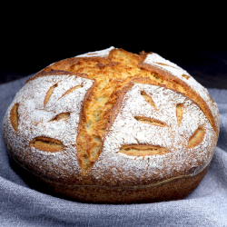

Making Sourdough Bread
Introduction
Sourdough bread is a timeless classic known for its unique tangy flavor, chewy texture, and crispy crust. Baking your own sourdough bread at home is a rewarding experience that allows you to enjoy the aroma and taste of freshly baked bread straight from your oven. In this lesson, we will guide you through the step-by-step process of making your very own sourdough bread, from creating and maintaining a sourdough starter to mastering the art of the perfect loaf.
Creating and Maintaining a Sourdough Starter
To make sourdough bread, you'll need a sourdough starter, which is a mixture of flour and water fermented by wild yeast and bacteria. Start by combining equal parts of flour (preferably whole wheat) and water in a glass jar. Cover it loosely and let it sit at room temperature for 24 hours. Feed the starter daily by removing half of it and replacing it with fresh flour and water. With regular feedings, your starter will become active and ready to leaven your dough.
Mixing the Dough
Once your sourdough starter is active and bubbly, it's time to mix the dough. In a large mixing bowl, combine flour (a mix of bread flour and whole wheat flour), water, and a small amount of salt. Incorporate a portion of your active sourdough starter into the dough and mix until all ingredients are well combined. Allow the dough to rest for 30 minutes before proceeding to the next step.
Stretch and Fold Technique
To develop gluten in the dough and create structure, use the stretch and fold technique. Wet your hands and gently stretch one side of the dough, then fold it over the center. Repeat this process for each side of the dough. C
over the bowl and let the dough rest for another 30 minutes. Repeat the stretch and fold process two more times, allowing the dough to rest between each round. Bulk fermentation: After the stretch and fold process, leave the dough to ferment at room temperature for 3 to 4 hours. During this time, the dough will rise and develop flavor. Perform a series of stretches and folds every 30 minutes for the first 2 hours. The dough is ready for the next step when it has increased in volume and feels airy and puffy.
Shaping and Final Proofing
Transfer the dough onto a lightly floured surface and gently shape it into a round loaf. Place the shaped dough into a proofing basket or a well-floured bowl, seam-side up. Cover it with a clean kitchen towel and let it proof at room temperature for 2 to 3 hours, or until it has visibly increased in size.
Preheating and Scoring
Preheat your oven to 450°F (230°C) with a Dutch oven or a baking stone inside. Once the oven is hot, carefully transfer the proofed dough onto a piece of parchment paper. Using a sharp knife or a razor blade, make a few shallow cuts on the surface of the dough to create a decorative pattern. These cuts, known as scoring, help the bread expand and create a beautiful crust.
Baking
Slide the dough, along with the parchment paper, into the preheated Dutch oven or onto the baking stone. Cover the Dutch oven with its lid or use a large heatproof bowl to cover the baking stone. Bake the bread for 20 minutes with the lid or cover on, then remove the lid or cover and continue baking for an additional 20-25 minutes, or until the bread is golden brown and sounds hollow when tapped on the bottom.
Cooking and Enjoying
Once baked, carefully remove the bread from the oven and place it on a wire rack to cool completely. Allow the bread to rest for at least 1 hour before slicing into it. This resting period ensures the moisture is evenly distributed and the flavors have fully developed. Finally, savor the crusty exterior and soft, tangy interior of your homemade sourdough bread.
Summary
Baking your own sourdough bread is a fulfilling and rewarding journey. From creating and maintaining a sourdough starter to mastering the art of shaping and baking, each step adds to the joy of making and enjoying your very own loaf. So, roll up your sleeves, gather your ingredients, and embark on an adventure that will fill your home with the irresistible aroma of freshly baked sourdough bread. Happy baking!